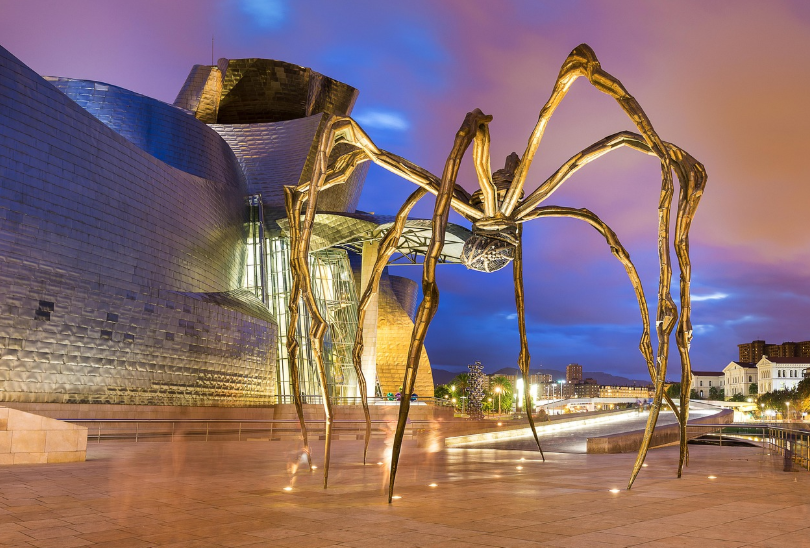
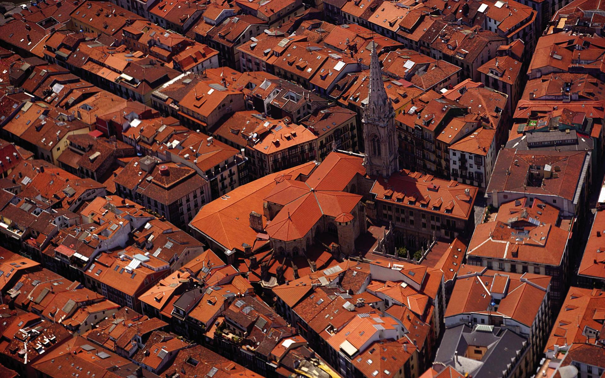
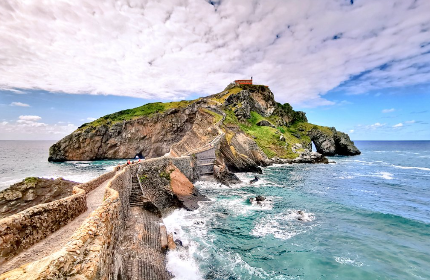
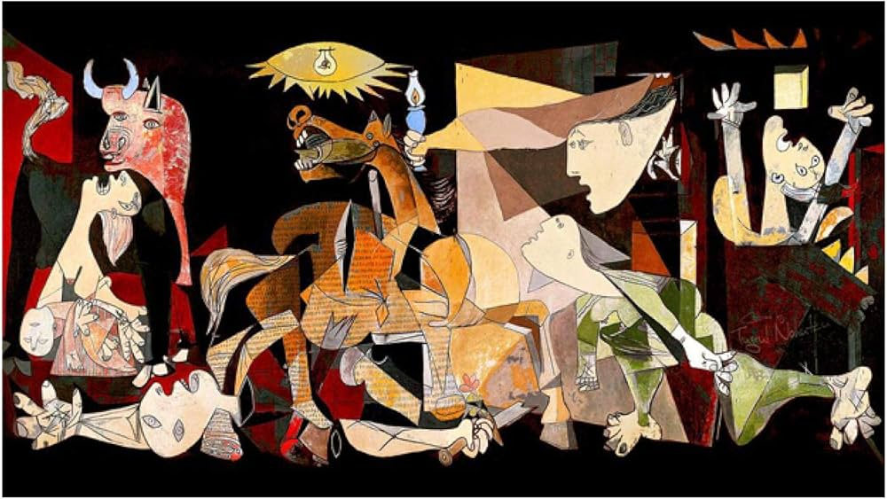
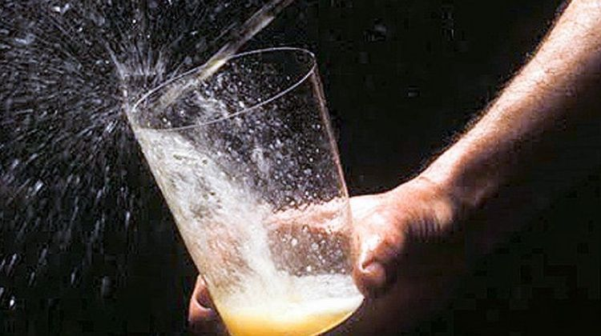
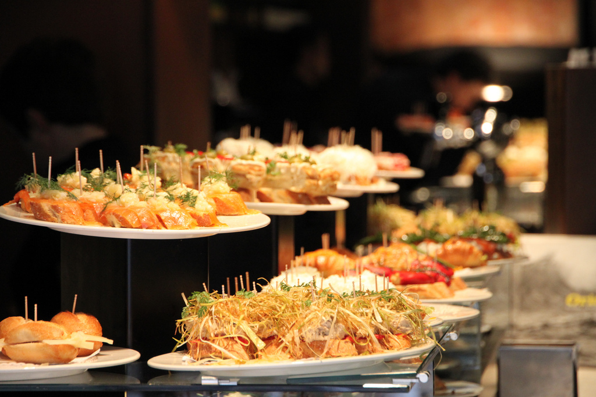

Bienvenue au Pays Basque !
Plongez dans l'effervescence de Bilbao, perle du Pays Basque : modernité, culture et gastronomie vous attendent pour une escapade vibrante et authentique. Entre le Guggenheim de Frank Gehry, les pintxos du Casco Viejo, l'îlot magique de San Juan de Gaztelugatxe et le rituel du txotx à Astigarraga, chaque instant raconte l'Euskal Herria.
Le voyage en un coup d'œil

🎨 Musée Guggenheim
- Chef-d'œuvre de Frank Gehry
- Architecture en titane
- Collection d'art contemporain
- Symbole de la renaissance de Bilbao

🏛️ Casco Viejo
- Les Siete Calles (Sept Rues)
- Plaza Nueva et places arcadées
- Bars traditionnels de pintxos
- Ambiance authentique basque

⛪ San Juan de Gaztelugatxe
- Îlot rocheux de la côte basque
- Pont de pierre spectaculaire
- 241 marches vers l'ermitage du Xe siècle
- Tradition : sonner la cloche 3 fois

🕊️ Guernica
- Musée de la Paix
- Le bombardement de 1937
- L'Arbre de Gernika, symbole de liberté
- Assemblée historique basque

🍎 Expérience txotx
- Astigarraga, capitale de la sidra
- Sidra naturelle servie au tonneau
- Menu traditionnel : morue, steak, fromage
- Rituel convivial et authentique

🍷 Pintxos & txakoli
- Dégustation dans les bars du Casco Viejo
- Pintxos variés et créatifs
- Verre de txakoli (vin blanc local)
- Culture gastronomique basque
Euskal Herria
Le Pays Basque en un clin d'œil : entre montagnes vertes, côte sauvage et villes vibrantes, un territoire à l'identité forte et à la culture vivante.
Votre itinéraire jour par jour
Jour 1 · Trajet aller : halte à Guernica
Départ
Route vers Bilbao avec une halte historique et émouvante à Guernica, sur la route du Pays Basque.
Déjeuner à Guernica
Visite du Musée de la Paix qui retrace le bombardement de 1937, immortalisé par Picasso. Une plongée poignante dans l'histoire basque et européenne. Découverte de l'Arbre de Gernika, symbole millénaire de la liberté basque, et de l'Assemblée historique où siégeait le parlement foral.
Arrivée à Bilbao
Installation à l'hôtel et première promenade le long de la ría. Soirée pintxos dans le Casco Viejo pour une première immersion dans la culture basque.
Jour 2 · Bilbao : modernité & traditions
Musée Guggenheim
Chef-d'œuvre de Frank Gehry, architecture en titane et collection d'art contemporain. Un symbole de la renaissance de Bilbao, à découvrir sans précipitation.
Casco Viejo & pintxos
Les Siete Calles, Plaza Nueva, bars traditionnels. Dégustation de pintxos et de txakoli dans l'ambiance chaleureuse du cœur historique. Déjeuner dans un bar de pintxos typique.
Pont transbordeur de Bizkaia
Classé UNESCO, ce pont-transbordeur de 1893 relie Portugalete à Getxo. Une prouesse d'ingénierie unique en son genre. Possibilité d'excursion vers la côte basque et les plages de Getxo.
Dîner au restaurant basque
Soirée dans un restaurant traditionnel pour découvrir les saveurs du Pays Basque : bacalao al pil-pil, marmitako, ou chuletón de buey.
Jour 3 · Patrimoine & côte sauvage
Héritage industriel
Exploration de l'héritage sidérurgique et maritime qui a façonné Bilbao. Musées retraçant la transformation de la ville, du port industriel à la métropole culturelle.
San Juan de Gaztelugatxe
L'îlot magique au sommet de 241 marches de pierre, surplombant la côte sauvage de Biscaye. Son sommet abrite un ermitage du Xe siècle. Tradition : sonner la cloche trois fois pour faire un vœu. Déjeuner dans un restaurant de la côte avec vue sur l'Atlantique.
Côte basque
Getxo, plages et villages de pêcheurs. Découverte du littoral basque entre falaises, ports et villages authentiques.
Soirée tapas à Bilbao
Retour à Bilbao pour une soirée tapas dans le quartier d'Ensanche. Dégustation de spécialités basques et verre de vin de Rioja alavesa.
Jour 4 · Retour : l'expérience txotx
Départ de Bilbao
Une matinée volontairement légère pour quitter Bilbao sans précipitation, puis reprendre la route vers la France.
Astigarraga & expérience txotx
Arrêt déjeuner dans une sidrerie d'Astigarraga, capitale de la sidra basque. Rituel du « txotx » : on déguste la sidra naturelle directement au tonneau. Menu traditionnel : omelette de morue, steak de bœuf, fromage de brebis et noix. Ambiance conviviale et authentique, parfait point d'orgue avant le retour.
Retour
Route du retour avec les images du Pays Basque en tête et le goût de la sidra sur les lèvres.
San Juan de Gaztelugatxe
« Château de roche » ou « château inaccessible ». 241 marches, un pont de pierre, un ermitage du Xe siècle et une vue à couper le souffle sur la côte basque.
L'esprit du voyage
🎨 Culture & Art
Guggenheim · Casco Viejo · Pont de Bizkaia UNESCO · Guernica
🍽️ Saveurs basques
Pintxos · txakoli · sidra · txotx · restaurants traditionnels
🌊 Côte & Nature
San Juan de Gaztelugatxe · Getxo · falaises · villages de pêcheurs
✨ La philosophie VPDVOYAGES
- Sélection : Des étapes qui ont du sens dans le rythme global
- Équilibre : Culture + gastronomie + nature + soirées organisées
- Personnalisation : Le programme évolue selon vos envies
Bilbao, el Botxo ! Repartez avec des souvenirs plein les yeux et le goût des saveurs du Pays Basque.
Votre itinéraire sur la carte
De Guernica à Astigarraga, en passant par Bilbao et la côte basque : cliquez sur chaque point doré pour découvrir les étapes de votre escapade.
Bon séjour à Bilbao !
Bilbao, el Botxo ! · Escapade de 4 jours au Pays Basque
Parlons de votre projet →